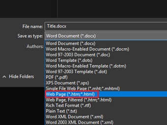

User Manual for Converting Files
Introduction
This document contains examples of how to use the DocToHTML program or Help File Creator. This document focuses on using the tools found htmltools.py independently of the gui program (as the gui is designed to be more straight forward and ideally requires less technical knowhow). This document itself has been converted to act as an example of it working. There is a plain version as well to demonstrate the difference between them. 
Currently there is some difficulty in handling of images and this is mitigated by either having the images set to in line with text. This is because when exporting a word document as HTML it does not include any information about the “wrap-method” of the image and only the image itself. If it is not set to “in line with text” then it instead appears as part of the paragraph and will not appear where it does in the document version.
It is also worth noting that any EXISTING bookmarks/links in the document will remain. For this reason a “tag” is prepended to any bookmarks created. By default this tag is “qq_” as it uses 2 letters that are (typically) unlikely to exist alongside one another
Converting a Document
To use this program, you will need to have a word document you want to convert. It will need consistent header styling throughout. Can then go to “Save As…” and change the “Save As Type” field to be a web page (*.htm,*html) or filtered webpage. Note that filtered htmls will be smaller in file size and less likely to have issues as there will be fewer conditional aspects to the styling.
After saving the document can write the following code. The below example is if you wish to do this outside of htmltools:
import htmltools
path = 'path/to/htmlcreated'
Example = htmltools.Manual(path,'NameOfFile')
Example.prettify_html()
This on its own will spruce up an otherwise plain file. It will create a sort of frame for the document to live in and will include a navmenu on the left (if there are subheadings there will be a dropdown for them) and a searchbox in the top left for finding specific items. It will also include a logo. (see below if you want to remove/change this)
The “NameOfFile” parameter will be the name of the directory where all parts of the result are created. This is just a name and not a path. If the name is invalid then an error will be returned. Note that it will ALSO error if the target folder already exists (to prevent deleting important files)
The other sections here are examples of how to tweak parts of this to suit more specialist needs and act as a way to help troubleshoot issues
Example 1 - Changing Header Target
This is the first instance of heading 2 and a link will be automatically created to link here. The title will be excluded from the nav menus as it will be tagged with <h1> in the document. If wanting to change this can change by calling the “Manual” object and changing the ‘childHeading’ or ‘parentHeading’ parameters (depending on if you want it to appear in a drop down)
By default, parentHeading is set to ‘h2’ and childHeading is set to ‘h3’. Can adjust the code below
path = ‘path/to/target/file.htm’
manualEx = Manual(path,'example')
manualEx.childHeading = 'h2'
manualEx.parentHeading = 'h3'
If it is not working as expected then open the saved HTML file into a text editor and make sure the headers are labelled in the expected manner. If they are not then you can change the variables as described above to better suit your needs
Example 2 -Trimming NavMenu Titles
Some cases may want to trim names as they appear in the nav menus. Additionally, you may also want to change the tags themselves to make the URL appear less jumbled.
Similar to the previous example these can be altered by changing values inside the Manual class by just calling them.
These act as rules for names and tags. It is worth noting that any name rules will ALSO be applied to the tags first before any tags are applied.
This can be useful if chapters are laid out with “Chapter x –“ at the start of each one for readability as this can be trimmed out or removed
Any chapters without a name are also trimmed automatically Below is a screenshot of this document in MSWord where there is an extra empty heading (there won’t be one on the help document html version of this document)

Trimming Example
Below is an example of how this trimming works in practice. The result can be seen in the picture, also below
example = Manual(path,'example')
example.nameBlacklist = []
example.nameCutoff = ['-','\u2013']
# this will mean all the navmenu names won’t have ‘Example X –‘ at the start as it’ll be cutoff
# \u2013 is the unicode for an em-dash as MSWord often (but not always) autocorrects dashes to these
example.tagBlacklist = ['Titles'] ‘this means the tags won’t contain the word ‘titles’ so the bookmark for example 2 will become “qq_trimmingnavmenu”
example.tagCutoff = []
example.prettify_html()

Example 3 – Adding a Logo
In the case that this is used for changing a manual to have a bit more of a refined look than just a wall of text can include a path to a logo. As with other cases can update the objects ‘logoPath’ value to match that. If logoPath is set to “” then that removes it from the resulting document. By default, however the logo that is used is the one that is simply called logo in the same directory as htmltools.py.
This file can be replaced or the path variable can simply be changed. Below is how one would go about changing the path variable. When “prettify_html()” is called then it will sort out any of the other parts that are affected as a knock on of this.
Can also define a link for the logo to go to (such as company site). Setting logoLink to “” will cause the logo (if present) to become inert and just not go anywhere
Example = Manual(path,'example')
Example.logoPath = ‘’
# this will remove logo when prettify_html is called
# as there is no logo do not need to change logoLink
Appendix 1 – List of Other Adjustable Values
Above sections cover the basic idea behind altering values and are generally cases that are somewhat more unique. Below is a list of variables that exist inside the class and can be changed. These can be changed fairly freely and do not require much thought to other parts of the document like the above sections
|
Variable Name |
Type |
Purpose |
|
logoPath |
string |
Adjust file path to logo. Can set to “” if not wanted |
|
logoLink |
string |
Adjust where logo goes to if clicked. Can set to “” if not wanted |
|
nameBlacklist |
list of strings |
Characters/strings to remove from names and bookmarks |
|
nameCutoff |
list of strings |
Characters/strings to act as a cutoff for names and bookmarks. Everything before cutoff will be removed |
|
tagBlacklist |
list of strings |
Characters/strings to remove from bookmarks |
|
tagCutoff |
list of strings |
Characters/strings to act as a cutoff for bookmarks. Everything before cutoff will be removed |
|
parentHeading |
string |
Heading marker in html. Does NOT include angled brackets. Is just ‘h2’ by default |
|
childHeading |
string |
Subheading marker in html. Does NOT include angled brackets. Is just ‘h3’ by default |
|
tag |
string |
String at start of a bookmark. Is ‘qq_’ by default |
|
sideNavWidth |
integer |
Size of side nav menu. 340px by default. |
|
topNavHeight |
Integer |
Size of top nav menu with searchbox. If less than 40px then is removed |
|
highlight |
string |
Colour of borders and background colour when mousing over nav menu items |
|
navFontSize |
float |
size of writing (pt) on side nav and topnav search bar |
Appendix 2 – Script for Creation of This Document
Below is the code used to change this document into a nicer format to act as an example/demo in a more practical sense
path = 'C:/…/UserManualPlain.htm'
example = Manual(path,'UserManualModified')
example.logoPath = 'LogoExample.png'
example.logoLink = ''
example.highlight = '#604D81'
example.sideNavWidth = 250
example.navFontSize = 12
example.nameCutoff = ['-','\u2013']
example.prettify_html()